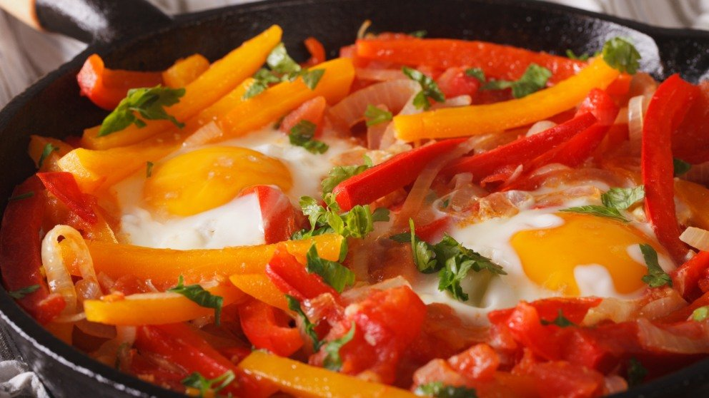

La gastronomía vasca es una de las más reconocidas mundialmente, muchos de los mejores chefs han salido de aquí. La cocina de Bilbao, más concretamente, cuenta con mucha personalidad y productos autóctonos y de calidad. Los restaurantes vascos son de los más afamados y su gastronomía llama siempre la atención: los productos del mar y sus formas de cocinarlos tan peculiares no paran de ganar adeptos.
Los pintxos son lo más conocido y es que, ver la comida típica de Bilbao en miniatura, entra por los ojos. Bacalao, merluza, angulas, atún, chipirones… La clave de un buen plato es la materia prima y en Bilbao tienen la mejor. Si vas a escaparte unos días a la capital vizcaína apunta, esto es lo que tienes que pedir para comer si quieres disfrutar de lo más típico de la ciudad.
Los tipicos pintxos de Bilbao
Los pintxos son el equivalente a las tapas en Bilbao. Su curioso nombre viene del verbo español “pinchar”, ya que históricamente estos pintxos se servían sobre pan y pinchado por un palillo. Lo cierto, es que a día de hoy estos han evolucionado mucho y ya no se limitan a este formato tradicional, siendo muchos los platos que han reducido su tamaño y muchas las creaciones que se han dado en este formato.
Lo que está claro es que si visitas Bilbao tienes que reservarte un día para hacer una ruta de pintxos. Esta forma de comer o cenar es una experiencia que sólo se puede vivir si visitas el País Vasco, y sin duda, es una de las más auténticas para conocer realmente su esencia. La idea es ir a un bar, elegir los pintxos que más te llamen la atención de la barra, y acompañarlos de un zurito, un vino o (ya que estamos) un txakoli.

Marmitako
Se trata de un clásico guiso perfecto para disfrutar en las estaciones de frío. No hay nada que haga entrar mejor en calor que un buen Marmitako. Se trata de un plato de bonito con patatas y verdura, ¿su secreto? Cocerse a fuego lento para que quede más sabroso. Una vez esté listo lo más recomendable es comerlo al momento. Estamos hablado de un plato tradicional de la cocina vasca, por lo que el mejor plan es ir a tomar uno al Casco Viejo de la ciudad, y como maridaje un buen vino blanco de la tierra.
Bacalao a la vizcaína
En la costa vasca habita el bacalao por eso, no es de extrañar que sea uno de los ingredientes fundamentales de la cocina de esta zona del país. Hay varios platos en la gastronomía de aquí que cuentan con bacalao, pero entre los más populares se encuentra en bacalao a la vizcaína. Tradicionalmente este plato llevaba una salsa compuesta únicamente de pimiento choricero, pero con el tiempo ha ido evolucionando y se le ha añadido tomate que suaviza el sabor intenso del pimiento.
Piperrada
Se trata del acompañamiento ideal y más popular de la gastronomía vasca. Sirve tanto para platos de carne como de pescado y es una salsa elaborada con diferentes verduras y hortalizas. Se puede hacer también como primer plato si se le añade un huevo por encima. Son muchos los restaurantes de Bilbao que cuentan con este plato como primero dentro de su menú.
¿Qué beber en Bilbao?
La comida tradicional vasca es una delicia, y como todas las delicias debe ir acompañada de un buen maridaje que complete la experiencia. En este caso, la gastronomía tradicional cuenta con varias bebidas típicas de la zona que acompañan a la perfección todos sus platos.
La Sagardoa es una de ellas, se trata de una sidra hecha en base al zumo de manzana fermentado. Es típico tomarla durante la época de sagardotegi, de enero a abril, acompañada del menú típico y con amigos.
El patxaran es una de las bebidas más antiguas del País Vasco. Se trata de un licor destilado a partir de las bayas de enebro, que se suele tomar al finalizar la comida como digestivo.